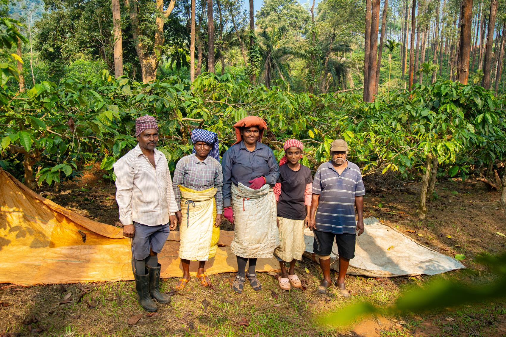
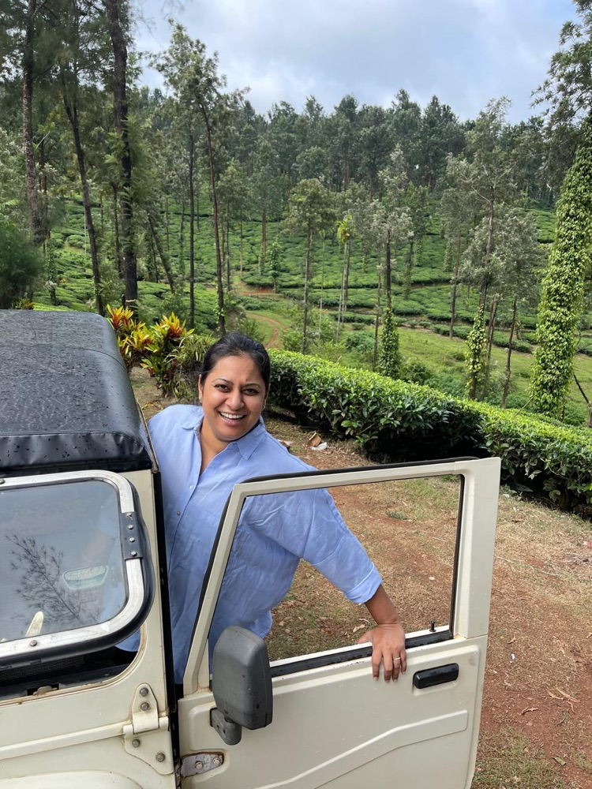
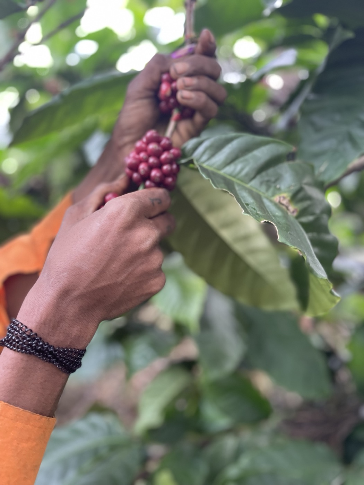
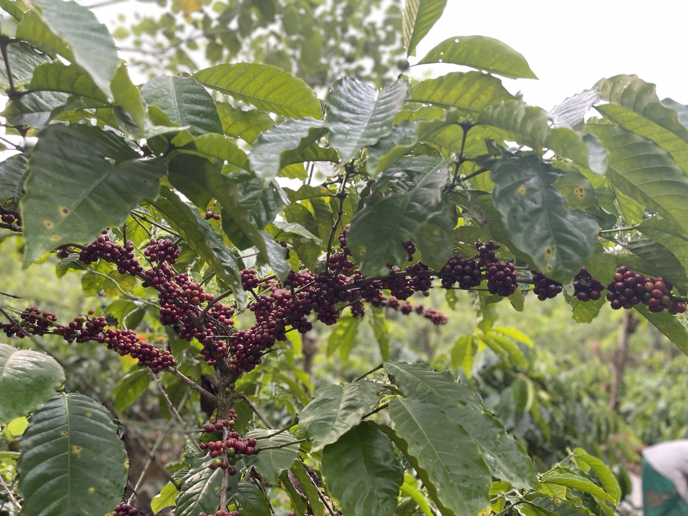
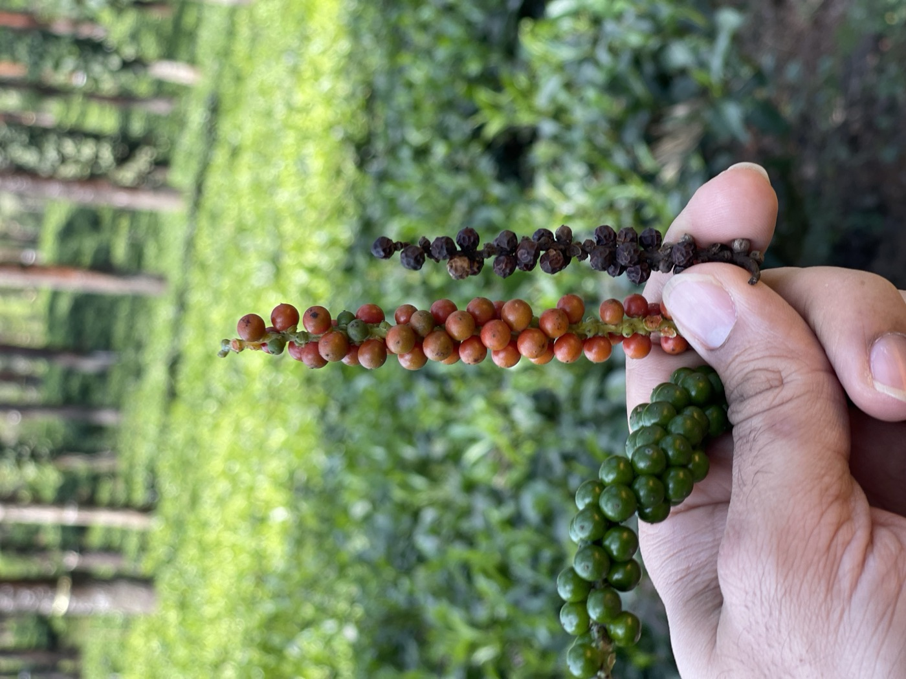
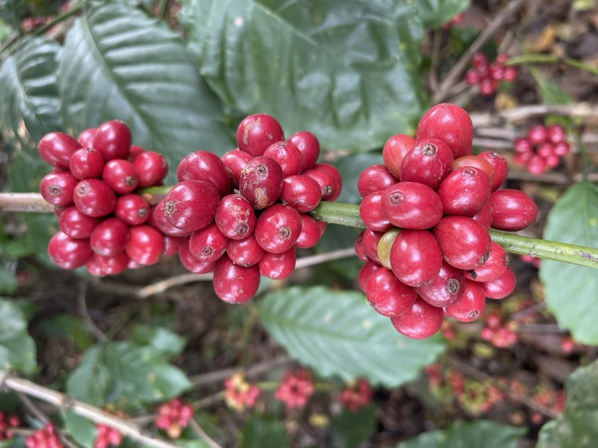
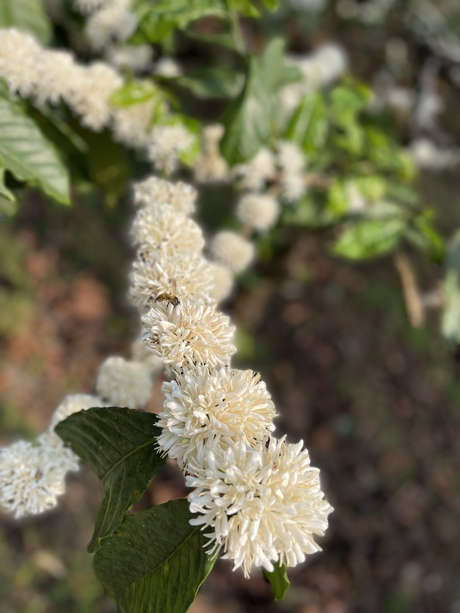
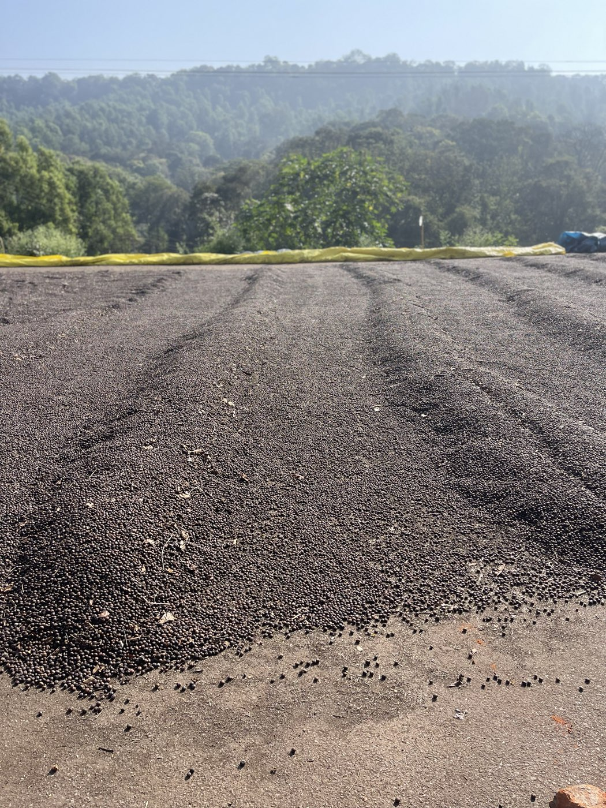
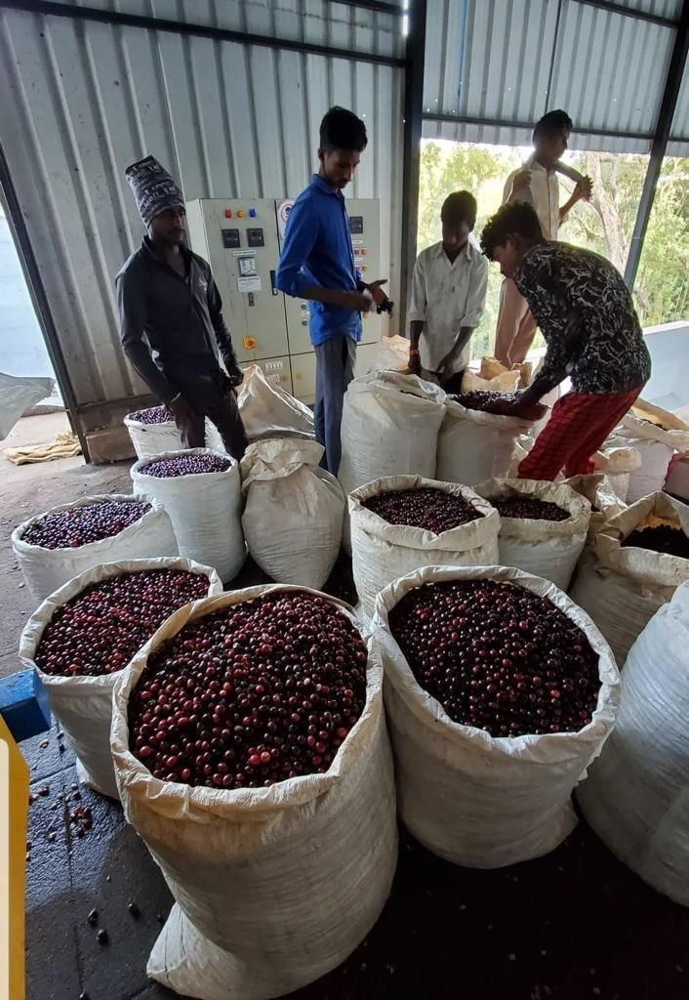

Mysore Plantations offers a very different expression of Indian coffee. This is a third-generation family estate, now woman-owned and managed, with roughly 1,300 acres under plantation and a workforce that is predominantly women. Coffee grows here as part of a broader multi-crop system alongside tea, pepper, arecanut, and rubber.

The estate’s identity is closely tied to Robusta, but not in the way Robusta is often treated in conventional coffee trade. Here, it is approached as a coffee worthy of careful harvesting, preparation, traceability, and individual evaluation. That matters to us because one of the most interesting things happening in Indian coffee right now is the way producers are asking buyers to look again at Robusta on its own terms.
The washed Robusta from Mysore Plantations shows why that matters. In the estate profile, it cups with brown sugar, red apple, walnut, and cinnamon, with a clean structure and a sweet, medium-length finish. It is presented not as a secondary coffee or anonymous blend component, but as a coffee with its own identity and place.
What stays with us most about Mysore, though, is the people behind the work. The estate is not simply about a variety or a process. It is about a new generation carrying forward a family plantation while changing the way specialty Robusta is seen and valued.
For Kuyil, Mysore Plantations represents both continuity and possibility. It reminds us that Indian coffee is not one story, and that some of the most important changes happening in the industry come from producers who are willing to challenge old assumptions.
Mysore Plantations was founded in 1942 and has stayed in the same family ever since. At about 850 to 915 meters, it has rich soil, reliable rain, and a diverse shade canopy. The estate follows the traditional Malnad multi-crop model, with tea, pepper, arecanut, and rubber alongside the coffee, and that variety helps keep the soil healthy over the long term.
Unlike most Indian estates, which grow both coffee species, Mysore concentrates on Robusta and grows it with the attention usually given to fine Arabica. Selective harvesting and careful handling after picking give cleaner, sweeter, more expressive cups.

Namita is the third generation of her family to grow coffee at Mysore Plantations, and she runs the estate today. Robusta is at the centre of the work, and she keeps looking for ways to improve it: regular quality checks through the season and careful soil care. The coffee gets better every year.
She is also deliberate about who the estate works for. Namita promotes women on the farm and encourages women to take on work and responsibility across the estate.
She also runs a small guesthouse, an old vintage property that has been loved and reimagined with only minimal changes to the original design. It is a beautiful place to stay, and the food is some of the best we had in Karnataka, including a jackfruit and black chana subzi. Jackfruit grows wild in the hills around the estate and shades the coffee plants, so the dish comes from the same landscape as the coffee.







For roasters, we share green coffees with full lot information and samples on request. For coffee drinkers, we offer a small roasted selection from the same estates.
Reach out for samples, inquiries,
or to start a conversation.
We've received your inquiry and will
be in touch shortly.